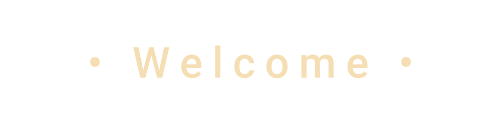
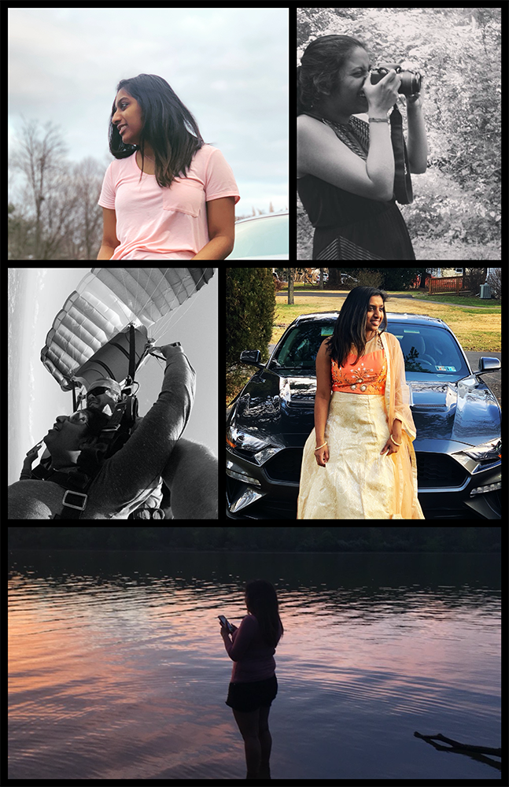

My name is Lakshmi Shaji. As of 2020, I am a full time student at Temple University. I am currently pursuing a bachelor's degree in Information Science and Technology. Additionally, as I work towards my degree, I intern at Temple University's Continuing Education Systems as a junior business analyst/ front end developer. I work with various program offices within the department to imporve and accomidate the requests for improvements to the noncredit ecommerce site in order to facilitate an enhanced user experience.
I am a self taught photographer. I prefer nature photography and strive to travel more to find rare photos. Nature has a certain beauty that we are not able to enjoy all the time. The most beautiful of all photos stem from something that is overlooked. I like to take the path less traveled to find the flip side of the overlooked. Most of my photography portfolio contains pictures taken at local parks or taken for friends as side projects. While I have never taken formal classes, photography is a hobby I wish to continue in the years to come.
Creating an has been a professional development goal since 2018. 2019 brought on a lot of opportunities for me to develop my professional skills. I wanted to create a space where I am able to collect and showcase the projects that I take part in throughout my college and professional career. I hope to help possible employers see my qualifications and to speak about my experience in a creative manner by using what I know.